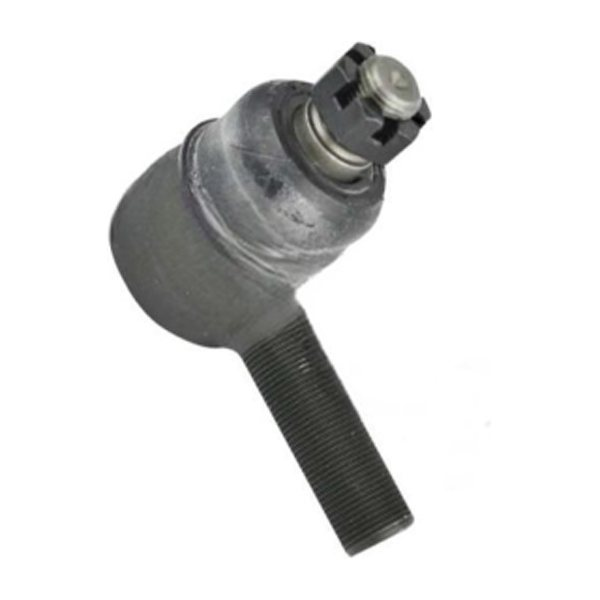

Available
Email for a quote
Nichiyu 46172-401 Tie Rod
| OEM part number | 46172-401 |
| Fits | Nichiyu |
| Models / notes | FB20P/25P/30P-60 (L) |
| Category | Steering |
| Type | Aftermarket replacement |
Send us the quantity you need and we'll reply with pricing, usually within 24 hours. Not the exact part? We can source it. Send the part number or a photo.